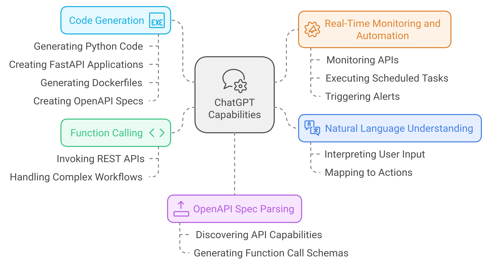

Programmable Platform with ChatGPT API
Overview
The goal is to develop a platform that enables users to dynamically create and manage services through natural language commands. This platform will leverage ChatGPT alongside OpenAI’s function calling capabilities to interact programmatically with various REST APIs. The system will automatically parse API definitions provided via OpenAPI specifications, enabling real-time monitoring, automation, and notifications based on user-specified conditions. For example, users could issue a command like, “Notify me when traffic is clear for 10 minutes,” and ChatGPT would generate the necessary logic to monitor and respond accordingly.

Key Technical Features
1. Translating Natural Language into Programmatic Execution
- Users input high-level commands such as: “Notify me when there is no traffic for 10 minutes.”
- ChatGPT processes the input, parses the intent, and generates the necessary API call sequences to continuously monitor traffic conditions.
- The system sets up polling or event-driven API calls and implements notification mechanisms based on defined thresholds or conditions (e.g., 10-minute traffic window).
The API interaction layer is handled through OpenAI’s function calling, allowing for structured input and output between ChatGPT and external APIs. The platform supports asynchronous monitoring through recurring API calls or webhooks for real-time notifications.
2. Parsing OpenAPI Specifications for API Discovery
- The platform ingests OpenAPI specifications (YAML or JSON), which describe available endpoints, methods (GET, POST, etc.), parameters, authentication mechanisms, and expected responses.
- ChatGPT uses these specs to generate dynamic prompts and actions, enabling users to explore API capabilities by issuing natural language queries such as, “What does this API offer?”
The OpenAI API extracts metadata from the spec and converts it into a structured format, making the platform capable of offering service discovery or suggesting actions based on user intent.
3. API Integration and Mashups
- ChatGPT can combine multiple APIs into a cohesive workflow based on user input. For instance, a user might request, “Show me both the weather and parking availability in Tokyo.”
- ChatGPT identifies relevant API endpoints, orchestrates concurrent API calls (using asyncio or other parallel processing techniques), and aggregates the data into a unified response.
By leveraging OpenAI’s function calling, the platform dynamically maps user commands to corresponding API actions and handles the logic required for multi-API integration. This includes performing API authentication, pagination, and error handling in the background.
4. Auto-Generating FastAPI Backends
- The platform can automatically generate a FastAPI backend for user-defined services. For example, if a user requests a service to monitor parking spots and traffic, ChatGPT can:
- Define RESTful endpoints in FastAPI.
- Implement periodic polling of external APIs or event-based triggers (using WebSockets or other event-driven mechanisms).
- Auto-generate input validation schemas using Pydantic, ensuring robustness against malformed inputs.
The backend logic is dynamically generated based on the user’s intent and can be containerized for deployment.
5. Continuous Monitoring and Condition-Based Automation
- Users can define conditions for continuous monitoring through ChatGPT. For example, “Alert me when parking availability in Tokyo exceeds 10 spots for more than 10 minutes.”
- ChatGPT sets up a scheduled task (using
APScheduleror similar libraries) to periodically call the API and evaluate the conditions. - When conditions are met, the system triggers actions such as sending a notification through external services (email, SMS, Slack, etc.).
This logic is executed as part of the backend infrastructure, allowing for real-time, event-driven automation. The scheduling and monitoring infrastructure can scale horizontally using task queues like Celery or Redis.
6. Dynamic API Invocation via Function Calling
- OpenAI’s function calling feature allows the platform to dynamically invoke APIs by extracting required parameters from user input and mapping them to structured requests.
- For example, a user request like, “Get available parking spots in Tokyo,” will:
- Trigger ChatGPT to parse the query, map it to an endpoint described in the OpenAPI spec, and dynamically generate the API call with the appropriate parameters.
- Handle API authentication tokens, error handling, retries, and rate limits automatically, ensuring robust API interactions.
This mechanism ensures that user commands can be mapped to API invocations in a highly automated and scalable way.
7. Natural Language API Mapping
- ChatGPT automatically translates natural language queries into appropriate API calls by extracting intent, identifying available endpoints, and populating required parameters.
- Example flow:
- User: “Monitor parking availability in Tokyo every 30 minutes and alert me when more than 10 spots are available.”
- ChatGPT processes the request, sets up periodic API polling using a scheduler, and defines the logic for alerting based on the response.
Through natural language processing, ChatGPT simplifies the complexity of working with raw API specifications, enabling seamless API integration for users with no coding experience.
8. Auto-Generating Docker Containers
Once a FastAPI service or custom workflow is defined, ChatGPT can auto-generate a Dockerfile to containerize the service. This ensures that all dependencies, environment variables, and configurations are encapsulated, making the service portable across different deployment environments.
Example Dockerfile generated by ChatGPT:
FROM python:3.9-slim WORKDIR /app COPY requirements.txt . RUN pip install -r requirements.txt COPY . . CMD ["uvicorn", "app.main:app", "--host", "0.0.0.0", "--port", "8000"]
The system can generate fully containerized services, making deployment in cloud environments like AWS, Azure, or GCP straightforward via CI/CD pipelines.
9. Auto-Generating OpenAPI Specifications for New Services
For every new service or API integration created by ChatGPT, the system can also generate a corresponding OpenAPI specification. This allows third-party developers to consume the newly generated APIs and integrate them into their own applications.
For example:
- A user requests an API that combines both weather and parking data. ChatGPT generates a FastAPI service for this, and then creates the relevant OpenAPI spec for the combined API, making it accessible for external integration.
Example Workflow
- User Command
- User: “Notify me when there are more than 10 parking spots available in Tokyo and traffic is below 20% for the next hour.”
- ChatGPT Processes and Generates Backend Logic
- ChatGPT interprets the request, identifies relevant parking and traffic API endpoints, and generates a FastAPI service that monitors these conditions.
- The service includes asynchronous polling of the APIs and evaluates the combined results against user-defined thresholds.
- Containerization and Deployment
- The platform auto-generates a Dockerfile for the FastAPI service, ensuring the service can be deployed in any environment with minimal configuration.
- Real-Time Monitoring and Alerts
- The service periodically checks parking and traffic APIs. When both conditions are met (e.g., more than 10 spots available and traffic below 20%), the platform triggers a notification via a preconfigured service (SMS, email, webhook, etc.).
ChatGPT / OpenAI API Capabilities
1. Natural Language Understanding
ChatGPT has advanced language understanding capabilities, allowing it to interpret user input in natural language and map it to programmatic actions. It can dynamically generate requests to external APIs, define workflows, and automate services based on real-time user queries and commands.
2. Function Calling
OpenAI’s function calling allows ChatGPT to execute structured operations, such as invoking REST APIs or performing specific tasks that require formatted input and output. This capability enables ChatGPT to handle complex workflows, parameter validation, and API invocation dynamically without hardcoding API logic into the application.
3. Code Generation
ChatGPT can generate executable Python code, FastAPI applications, Dockerfiles, and OpenAPI specs dynamically. This enables users to set up new services, containerize them, and deploy them with minimal manual intervention.
4. OpenAPI Spec Parsing
ChatGPT can parse and understand OpenAPI specifications, allowing it to discover API capabilities and automatically generate function call schemas. This means the system can identify available endpoints, handle API authentication, and dynamically execute API calls based on the user’s instructions.
5. Real-Time Monitoring and Automation
By using OpenAI’s API, ChatGPT can continuously monitor APIs, execute scheduled tasks, and trigger alerts based on user-defined conditions, enabling dynamic, real-time automation of services like traffic monitoring or parking availability.
Conclusion
By integrating OpenAI’s ChatGPT API, this platform provides a highly flexible and automated environment for users to create, manage, and deploy services with ease. Through natural language inputs, ChatGPT can automate API interaction, backend generation, service containerization, and condition-based monitoring, making it accessible to both technical and non-technical users. The real power lies in ChatGPT’s ability to interpret complex requests and convert them into executable actions with minimal setup or manual intervention.